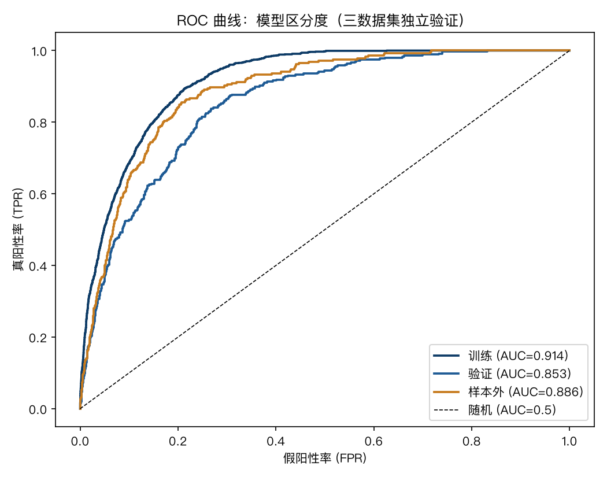
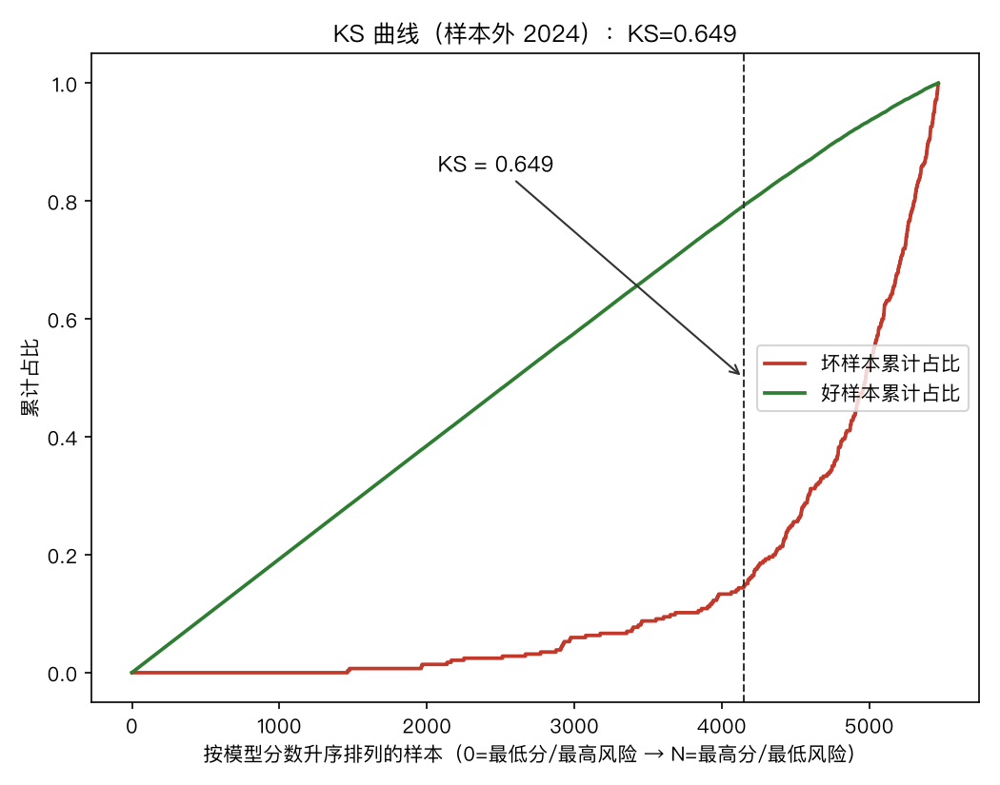
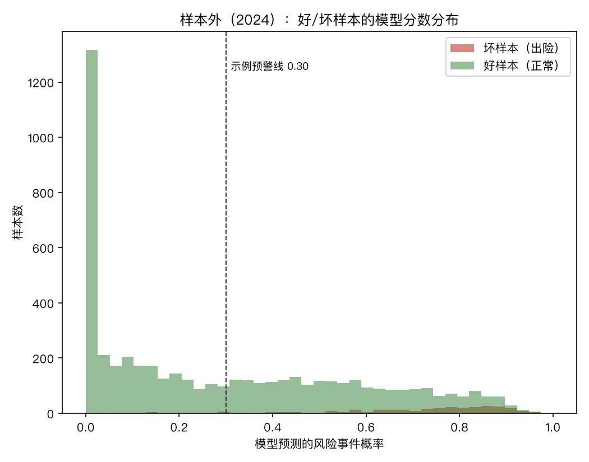
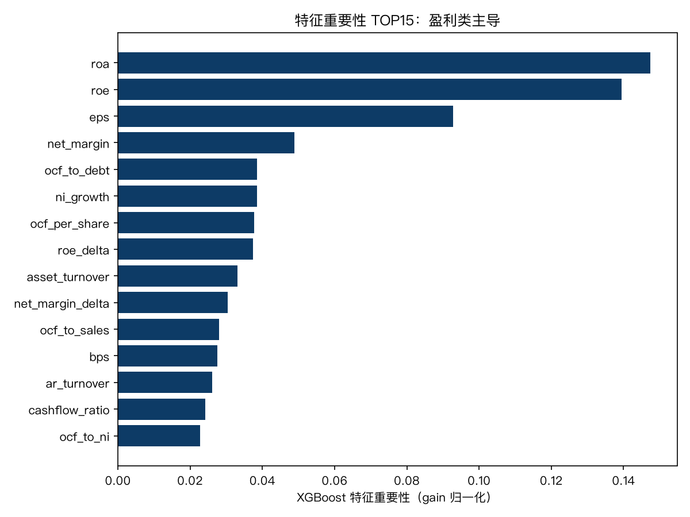
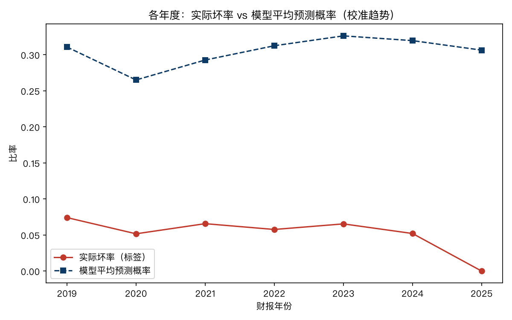
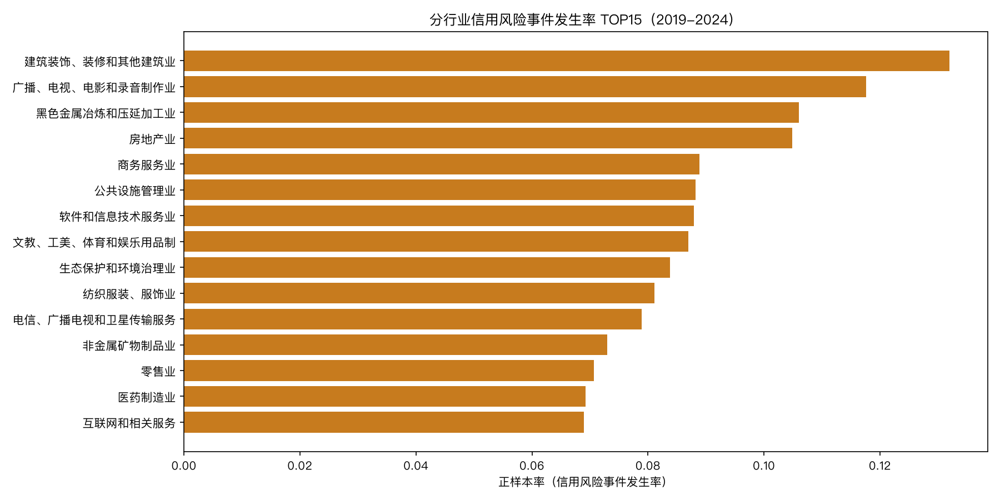
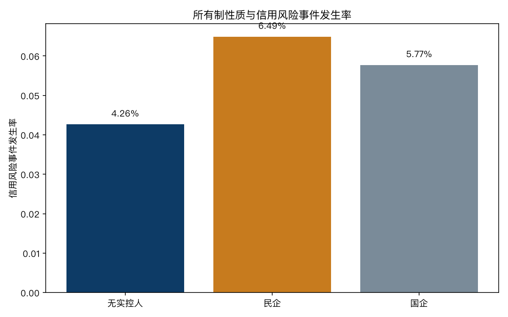
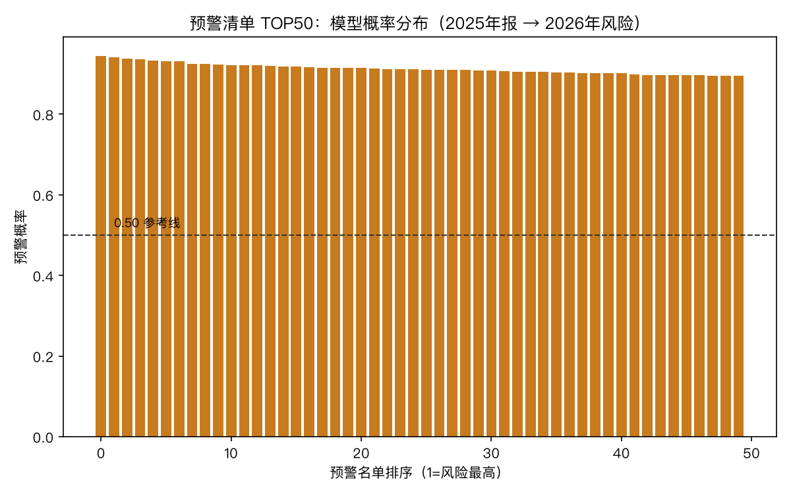
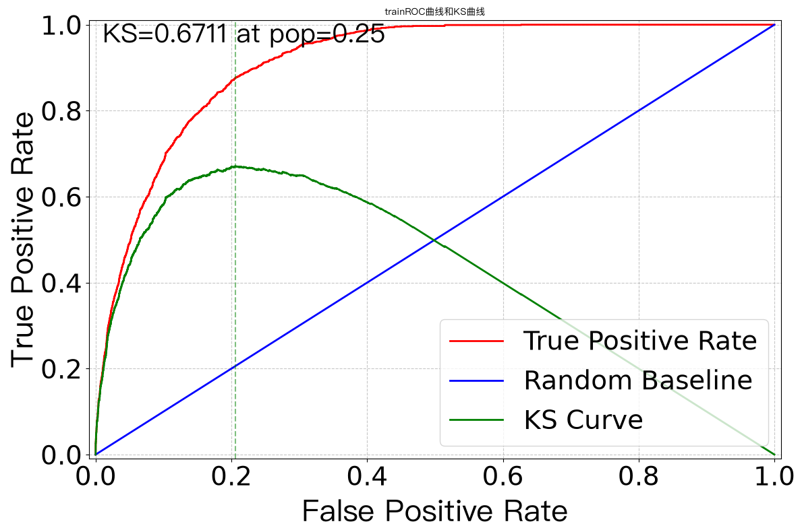
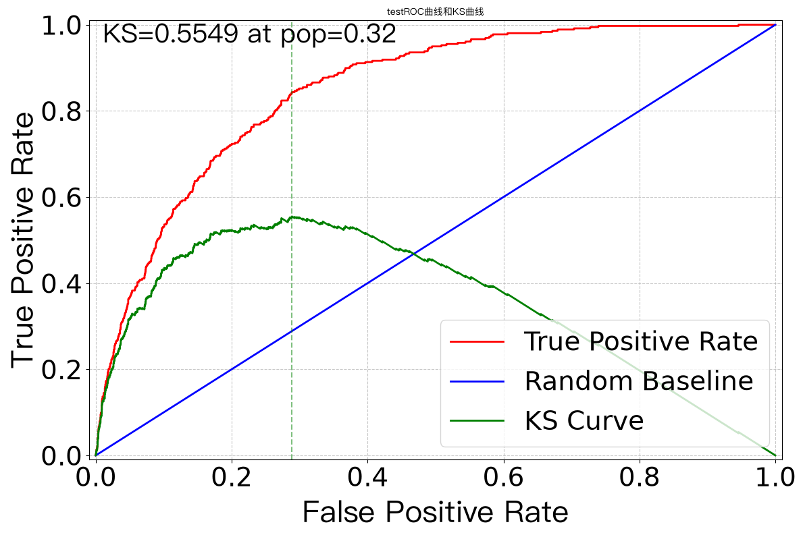

中国发债主体信用风险预警模型 — 结果图表报告（含逐图解读）
作者：章建军 ｜ 2026年8月20日 ｜ 本报告面向初次接触机器学习/信用分析的读者：每张图先讲"怎么看"，再讲"看到了什么"。全部图表基于修复后数据与生产模型生成。
〇、指标速查表（先认识这些词，再看图）
| 术语 | 含义（人话版） | 取值范围 | 好坏标准 |
|---|
| AUC | 曲线下面积。直观理解：随机抽一个"真出险"公司和一个"真正常"公司，模型给前者打分更高的概率。0.5=抛硬币，1.0=完美 | 0.5 ~ 1.0 | ≥0.8 强区分；≥0.9 极强 |
| KS | 把样本按分数从低到高排序，画"坏样本累计占比"与"好样本累计占比"两条曲线，两条线的最大垂直距离就是 KS。可以理解为"模型在最优点能把好坏分开多少" | 0 ~ 1 | ≥0.3 可用；≥0.4 优秀；≥0.6 极强 |
| FPR（假阳性率） | ROC 图的横轴：被模型误判为高风险的好公司比例（"冤枉率"）。FPR=0.1 表示10%的好公司被误标为高风险 | 0 ~ 1 | 越低越好 |
| TPR（真阳性率） | ROC 图的纵轴：被模型正确识别出的坏公司比例（"抓中率"）。TPR=0.8 表示80%的坏公司被标出 | 0 ~ 1 | 越高越好 |
| PSI | 群体稳定性指数：模型在不同时期的分数分布漂移程度。上线后若客户结构变了，分数分布会漂，PSI 变大 | ≥0 | <0.1 稳定；0.1-0.25 关注；>0.25 重建 |
| IV | 信息量：单个指标对"好坏"的区分能力，用于特征筛选（详见文字报告第5章） | ≥0 | <0.02 剔除；>0.3 强 |
| 特征重要性 | XGBoost 内部统计：每个特征在多少决策树分裂中被用来做判断（归一化后和为1）。越大说明模型越依赖它 | 0 ~ 1（归一化） | TOP特征应是业务上说得通的 |
| 校准（Calibration） | 模型的预测概率是否贴近真实比例。若模型说"概率30%"，实际100家里真有约30家出险，就是校准良好 | — | 预测线贴近实际线 |
| 预警概率 | 模型输出的"未来一年发生信用风险事件（首次亏损/违约）的概率"，用于排序而非绝对断言 | 0 ~ 1 | 排序用；越高越优先复核 |
一、模型区分能力（3张图）
图1 ROC 曲线

训练（蓝）AUC 0.912 ｜ 验证（浅蓝）AUC 0.850 ｜ 样本外（橙）AUC 0.885 ｜ 虚线=随机水平0.5
📖 怎么读这张图：
- 先看对角线虚线——那是"瞎猜"的基准线（AUC=0.5）。任何一条真实曲线都应在它上方；
- 曲线越贴近左上角越好：左上角意味着"在冤枉很少好公司的前提下（FPR小），抓到很多坏公司（TPR大）"；
- 三条曲线分别是三个时间段的模型表现——训练集是"做过的题"，验证/样本外是"没见过的题"。判断过拟合就看它们差多远：三条线接近=没死记硬背；
- 每个曲线的"曲线下面积"即 AUC——面积越大，随机抽一对好坏样本、模型排对顺序的概率越高。
✅ 看到了什么：三条线都远离对角线、彼此接近（0.85-0.91）——模型在"没见过的年份"（样本外0.885）依然保持强区分力，没有过拟合。AUC 0.885 意味着：随机抽一个出险公司和一个正常公司，模型把出险公司排前面的概率约 88.5%。
图2 KS 曲线

样本外（2024）：红=坏样本累计占比，绿=好样本累计占比，KS=0.639
📖 怎么读这张图：
- 横轴是把所有公司按模型分数从低到高排列的位置（左边=模型认为最危险的，右边=最安全的）；
- 绿线（好样本累计占比）在左边低、右边高——因为好公司大多分数高（排在右边）；红线（坏样本）相反；
- 两条线分得越开，模型越能区分好坏。KS 就是两线最大垂直距离；
- 虚线标出 KS 最大处的位置——那是"抓坏最多、冤枉最少"的最佳切点参考。
✅ 看到了什么：KS=0.639（信贷行业优秀线0.4）——在最佳切点处，模型能分离出约64%的好坏累计分布差距；切点位于样本前25%附近，说明"风险最集中的一小撮公司"可以被精准锁定。
图3 好/坏样本分数分布

样本外（2024）：红=出险公司，绿=正常公司；虚线=示例预警线0.30
📖 怎么读这张图：
- 横轴=模型给出的风险概率（0=完全安全，1=极度危险）；纵轴=各概率区间的公司数量；
- 看两堆柱子的分离程度：如果红色堆在右边、绿色堆在左边、中间重叠少——模型区分能力好；
- 重叠区域（中间地带）就是"模型没把握"的公司——业务上通常设为"人工复核区"；
- 虚线是示例预警线：线右边的公司进入预警名单。
✅ 看到了什么：红色集中在高概率区、绿色集中在低概率区，重叠带窄——与 ROC/KS 的结论一致。若把预警线设在0.30，能圈住大部分出险公司，同时误伤正常公司有限。
二、模型学到了什么（2张图）
图4 特征重要性 TOP15

XGBoost 归一化重要性：模型在做判断时最常"看"哪些指标
📖 怎么读这张图：
- 柱长=该指标在模型数百棵决策树中被用于分裂判断的累计贡献（归一化）——柱越长，模型越依赖它；
- 看柱子集中在哪些类别：如果集中在盈利类（ROE/EPS/ROA/净利率），说明模型主要靠"赚不赚钱"判断风险。
✅ 看到了什么：TOP15 里盈利类占绝对多数（ROE、EPS、ROA、净利率、成本费用利润率），加上现金流含金量（经营现金流/净利润）——模型学的规律是"盈利质量恶化→出险"，与信用分析百年经验一致。这不是黑箱玄学，而是可解释、可辩护的规律。
图5 校准趋势

各年度：红线=实际坏率（真实出险比例），蓝线=模型平均预测概率
📖 怎么读这张图：
- 横轴=财报年份，纵轴=比率；
- 红线（实际坏率）是"事后诸葛亮"——当年真的出险的比例；蓝线是模型当年的平均预测——如果两条线走势一致、数值接近，说明模型概率是"可信的"（校准良好）；
- 若蓝线长期明显高于红线，说明模型高估风险（过于保守）；反之则过于乐观。
✅ 看到了什么：两条线走势同步（2019-2020高风险期都被捕捉，2023-2024回落也一致），蓝线略高于红线（模型偏保守，符合风控习惯——宁可多预警不可漏掉）。
三、分行业风险画像（2张图）
图6 行业风险率 TOP15

2019-2024年各行业信用风险事件发生率（正样本占比）TOP15
📖 怎么读这张图：
- 横轴=风险率（该行业样本中"未来一年出险"的比例），纵轴=行业；
- 柱越长=该行业平均风险越高。注意这是"发生率"不是"违约率"——包含首次亏损等早期信号；
- 对比基准：全市场平均约5.2%——柱长明显超过5%的行业值得重点关注。
✅ 看到了什么：建筑装饰13.2%（地产链垫资施工）、影视11.8%（可选消费+高经营杠杆）、钢铁10.6%（周期下行）、房地产10.5%（出清期）——高风险行业=地产链+周期+弱现金流，与中国债市真实违约分布吻合（如2021-2024地产违约潮、钢铁行业连年亏损）。
图7 所有制风险率

民企 6.5% ＞ 国企 5.8% ＞ 无实控人 4.3%
📖 怎么读这张图：
- 三根柱=三种所有制背景公司的整体风险率；
- 差距虽然只有1-2个百分点，但放在数万样本上是统计上稳定的差异；
- 结合行业看更有意思：畜牧业民企16.7%（正邦、雏鹰等养殖周期股）、钢铁国企13.5%——行业周期常常比所有制更决定风险。
✅ 看到了什么：民企风险高于国企（缺乏政府隐性背书），但差距小于直觉——因为样本里大量"非违约性亏损"稀释了所有制差异；真正的违约样本中民企占比更高（联合资信：2025年新增违约主体69%为民企）。
四、预警清单（1张图＋名单）
图8 预警清单 TOP50 概率分布

对2025年报全市场打分，风险最高50家的概率分布
📖 怎么读这张图：
- 横轴=预警名单排序（1=风险最高），纵轴=模型概率；
- 看曲线的形状：前段陡峭（前十几家概率0.90+）=模型给出了清晰的"高危梯队"；若整条线平坦，说明名单内部区分度弱；
- 虚线0.50参考线：线以上是模型把握度较高的部分。
✅ 看到了什么：前15家概率超过0.90，随后快速衰减——高风险梯队边界清晰。名单头部（无锡鼎邦0.944、天银机电0.942、陕建股份0.936）的共性风险特征是"ROE<3%＋净利率<4%＋经营现金流/负债<5%"——正是图4/图5揭示的规律在个体上的体现。
预警名单 TOP10（2025年报 → 2026年风险）
| 排名 | 代码 | 名称 | 行业 | 所有制 | 预警概率 | 主要风险特征 |
|---|
| 1 | 920931 | 无锡鼎邦 | 专用设备 | — | 0.944 | ROE<3%；净利率<4%；现金流/负债<5% |
| 2 | 300342 | 天银机电 | 通用设备 | 民企 | 0.942 | ROE<3%；净利率<4%；现金流覆盖弱 |
| 3 | 600248 | 陕建股份 | 土木工程建筑 | 国企 | 0.936 | 盈利双低；现金流覆盖弱；负债率>70% |
| 4 | 600740 | 山西焦化 | 焦化 | 国企 | 0.932 | 盈利双低；现金流覆盖弱 |
| 5 | 600328 | 中盐化工 | 化学原料 | 国企 | 0.925 | 盈利双低；现金流覆盖弱 |
| 6 | 688075 | 安旭生物 | 医药 | 民企 | 0.925 | ROE<3%；现金流覆盖弱 |
| 7 | 600510 | 黑牡丹 | 房地产 | 民企 | 0.922 | 盈利双低；现金流覆盖弱 |
| 8 | 002135 | 东南网架 | 金属制品 | 民企 | 0.920 | 盈利双低；现金流覆盖弱 |
| 9 | 600010 | 包钢股份 | 钢铁 | 国企 | 0.915 | 盈利双低；现金流覆盖弱 |
| 10 | 002419 | 天虹股份 | 零售 | 国企 | 0.915 | 盈利双低；负债率>70% |
⚠️ 名单使用边界：预警概率是"风险事件（首次亏损/违约）"概率，不是违约概率；排序可信、断言不可信——正确用法是"对名单启动人工尽调"（审计意见、舆情、现金流明细），不是直接定罪。城投/非上市主体不在样本。
五、平台独立验证（3张图，MARVIS 生成）
以下三张图由开源验证平台 MARVIS 的独立计算内核生成（不是本项目代码自报）——作用是"第二套独立实现复核第一套"，两套结果一致才算数。
图9-11 平台 ROC/KS（训练/验证/样本外）

平台验证-训练集：AUC 0.912 / KS 0.671

平台验证-开发验证集（2023）：AUC 0.850 / KS 0.555
平台验证-样本外（2024+2025）：AUC 0.882 / KS 0.632
📖 怎么读这三张图：
- 每张图左侧是 ROC 曲线（读法见图1），右侧是 KS 曲线（读法见图2），同图双视图；
- 三张图分别对应三个时间段——重点看"样本外"那张（模型没见过的2024-2025年数据）：AUC 0.882/KS 0.632；
- 与本地计算（图1：样本外AUC 0.885）对比：两套独立实现算出 0.882 vs 0.885——量级一致，互相印证。
✅ 看到了什么：平台独立验证通过：PMML 一致性 37,956 行零失败（"训练时的模型"与"要投产的模型文件"是同一个）；月度 PSI 0.02（上线后分数分布几乎不漂移）；压力测试剔除盈利类特征后 KS 0.632→0.106（再次印证盈利质量是核心信号）。
六、读完全部图后的三句话总结
- 模型是真的强：三套独立证据（本地计算、平台计算、PMML一致性）指向同一结论——样本外 AUC≈0.88、KS≈0.63，无过拟合；
- 模型学的是真规律：特征重要性、压力测试、出险画像三方面都指向"盈利与现金流质量恶化先于出险"——与百年信用分析经验一致；
- 模型的产出是"排序"不是"判决"：预警名单给出优先级，最终结论需要人工尽调——这正是"量化初筛＋基本面终审"的定位。
全部图表基于修复后数据与生产模型生成；平台图为 MARVIS 验证工作流产出；术语速查表覆盖本报告所有指标。